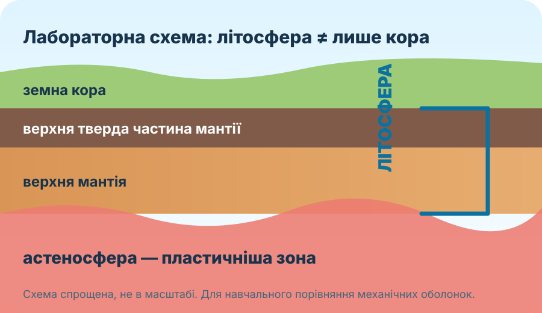

Земна кора
Найтонший зовнішній шар Землі. Континентальна кора загалом товстіша за океанічну.
Сьогодні не починаємо з готового визначення. Спершу зберемо докази: що приховано під нашими ногами, звідки вчені це знають і чому земна кора ≠ літосфера.
 NASA/JPL-Caltech/SwRI — внутрішня будова Землі
NASA/JPL-Caltech/SwRI — внутрішня будова ЗемліВи — команда геофізиків. Ваше завдання: за непрямими доказами визначити, де закінчується кора, що входить до літосфери та чому пластична астеносфера має значення для рухів літосферних плит.
Порівняйте три наукові зображення. Не читайте теорію нижче, доки не сформулюєте хоча б дві відмінності.



Натискайте на шари від поверхні до центра. Після кожного вибору з’явиться ключова властивість.
Підказка: літосфера не збігається з одним із цих хімічних шарів.
Чотири твердження схожі на правду. Одне — принципово неправильне.
Геофізики використовують сейсмічні хвилі — вони змінюють швидкість і напрям на межах середовищ.
| Глибина | Умовна швидкість хвилі |
|---|---|
| 10 км | 6,2 км/с |
| 30 км | 6,7 км/с |
| 40 км | 8,0 км/с |
| 80 км | 8,1 км/с |
Доказове завдання. У районі спостережень між 30 і 40 км швидкість різко зростає. Який висновок найкраще підтримують дані?
Після спостережень і доказів узагальнимо.
Найтонший зовнішній шар Землі. Континентальна кора загалом товстіша за океанічну.
Найпотужніший за товщиною шар. Її речовина переважно тверда, але за великих тиску й температури може дуже повільно деформуватися.
Земна кора + верхня тверда частина мантії. Це жорстка оболонка, розділена на великі й менші плити.
Пластичніша зона верхньої мантії під літосферою. По ній літосферні плити можуть повільно переміщуватися.
Під час перегляду знайдіть відповідь: чим літосфера відрізняється від просто «кори»?
За КТП саме сьогодні починаємо збір даних, які знадобляться в темі «Атмосфера».
Протягом місяця щодня фіксуйте: температуру повітря, хмарність, опади, напрям вітру та одну коротку примітку. Головне — однаковий час спостереження або чітко записаний час вимірювання.
Не переказуйте параграф — побудуйте коротке наукове обґрунтування.
Питання: Чому твердження «літосфера = земна кора» є неправильним?
§14. Намалюйте власну спрощену схему «кора → літосфера → астеносфера» та підпишіть, що входить до кожної частини. Продовжуйте календар погоди.
Електронний підручник / ВШО →Спочатку введіть ім’я, прізвище та клас. Лише після цього питання відкриються.